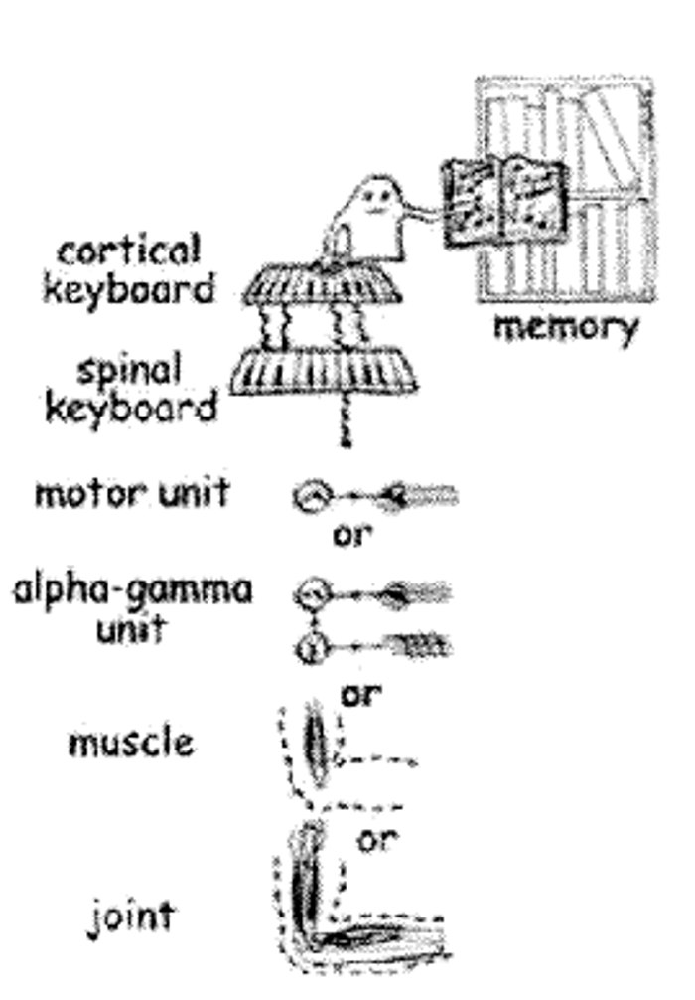
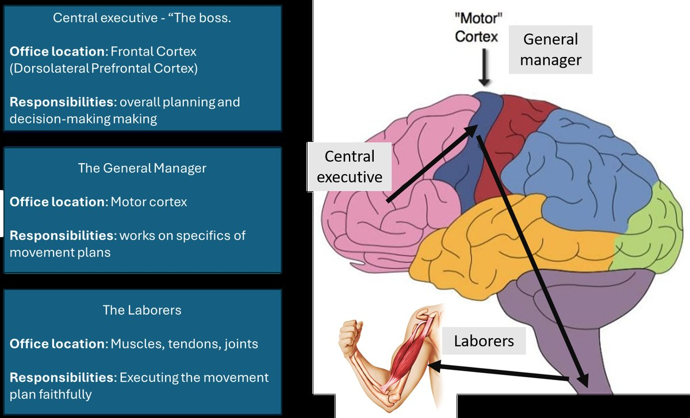
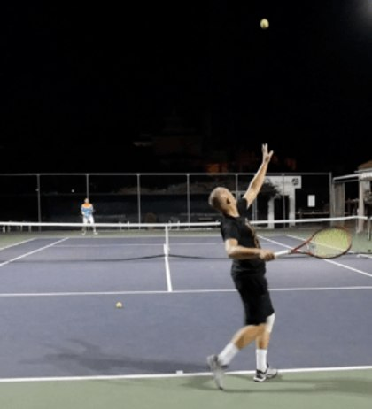
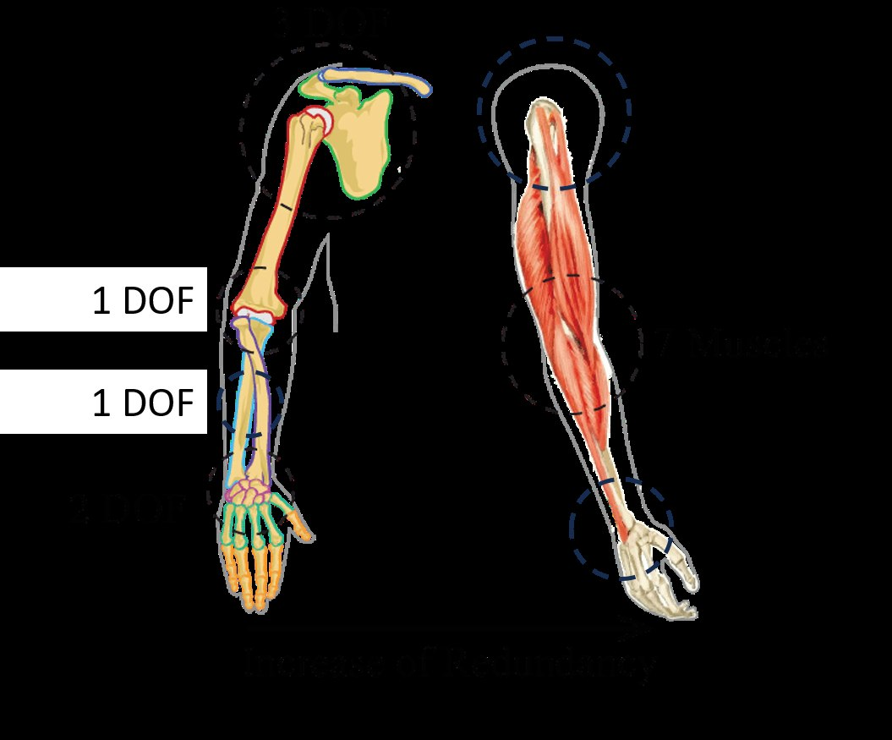
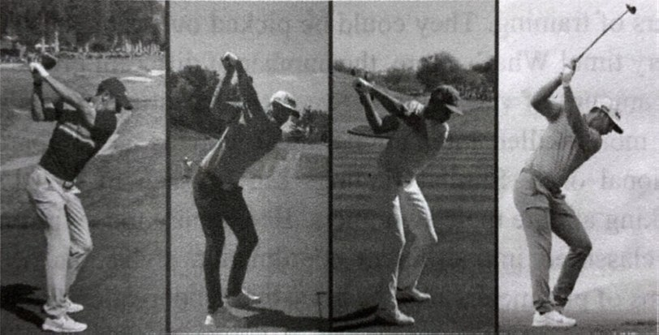

Motor Program Theories
The first family of answers to Bernstein’s problem: coordination comes from inside — stored instructions issued by an intelligent central executive.
By the end of this lesson you will be able to…
- 1Explain how motor program theories answer Bernstein’s problem — the “central executive” idea.
- 2Define a motor program and list its components.
- 3Describe the modular view of movement and its implications for practice.
- 4Explain the storage, novelty, and variability problems this view runs into.
“The intelligent executive”
Recall Bernstein’s question from Lesson 1: how does the body organize its many degrees of freedom into a controllable unit? Motor program theories give the first kind of answer:
Coordination is planned and commanded by the central nervous system. The brain stores instructions in memory and issues them to initiate, organize, and execute an action.
These are often called “central” theories — the source of order sits in a central executive, up in the brain. Think of the body’s muscles and joints as taking orders from above.
This one puts the answer inside the head: the nervous system solves the DOF problem by computing and storing a plan. Hold that image — Lesson 3 will offer the opposite answer.
A hierarchy of command
In this view, movement is organized hierarchically: a high-level executive makes the plan and delegates to lower-level effectors that carry it out. Rather than controlling each joint and muscle separately, the executive packages coordinated “sequences to play” — the cortical keyboard analogy:

Turvey, M. T., Fitch, H. L., & Tuller, B. (1982). The Bernstein perspective: The problem of degrees of freedom and context-conditioned variability. In J. A. S. Kelso (Ed.), Human Motor Behavior: An Introduction (pp. 239–281). Lawrence Erlbaum Associates.
The business analogy
If the cortical-keyboard picture feels abstract, here’s the same hierarchy as a company org chart. Each level has an “office” in the nervous system and a job to do:

Orders flow top-down: the boss plans, the manager works out the specifics, and the laborers execute faithfully. The intelligence lives at the top — the muscles just do as they’re told. That’s the defining commitment of this whole camp.
What is a motor program?
The plan the executive stores and issues has a name: a motor program.
A motor program is a pre-structured set of movement commands that can be executed without sensory feedback.
The classic “simple” definition (Keele, 1968): “a set of muscle commands that are structured before a movement sequence begins, and that allow the entire sequence to be carried out uninfluenced by peripheral feedback.”
“Without feedback.” Once the program starts, it runs to completion like a script — think of a fast movement that’s over before you could possibly react to it. The plan was set in advance.
Components of a simple motor program
A simple motor program specifies four things about the movement:
Order
The sequence in which muscles activate.
Timing
The relative durations of each part.
Force
How much force each contraction uses.
Muscles
Which specific muscles are involved.
Movement as a linear, modular pipeline
Central theories typically assume movement is built from separate modules arranged in a line — each stage finishes, then hands off to the next. Take returning a tennis serve. Flip each stage to see it applied:

Each module is treated as context-independent — a self-contained step that works the same regardless of what surrounds it.
If modules are separate, train them separately
Here’s the practical logic. If perception, cognition, and motor control are context-independent modules, then it should make sense to train each one on its own, out of the sport or rehab context, and combine them later.
Products built on exactly this logic include Dynavision (hand-eye coordination and reaction-time boards) and Eye-robics (eye-movement drills):
Notice the common theme: these are trained outside the sport or rehab context, on the assumption the trained module will carry back in.
Based on this modular assumption, what’s the prediction?
Make a prediction to continue.
Learning = building a better program
From the motor-program perspective, motor learning means building and refining a motor program — and later (in the generalized-motor-program / schema version) learning the rules for scaling that program to new situations.
This view implies practice should be repetition of a stable technique, with feedback about errors so the program can be corrected toward an ideal. Drill the “right” pattern until the program is solid.
Keep that prescription in mind — in Lesson 3 you’ll see a theory that recommends almost the opposite way to practice.
The storage problem
Motor-program theorists raised these problems themselves — a sign of a healthy, falsifiable theory. First: storage.
The novelty problem
If movement comes from a pre-stored program, here’s the puzzle:
How do we perform movements we’ve never done before — if we don’t already have a program for them?
With Keele’s simple definition, there’s no clear answer to a basic question: how does a child ever learn to play the violin? There was no pre-existing violin program to run — so where did the first attempt come from? Novelty is hard for a pure stored-program account.
Bernstein’s problem comes back — bigger
Remember 7 DOF in one arm at the joint level? At the muscle level it’s far worse. The body has 650–750 skeletal muscles, and each one’s activation is its own degree of freedom:

Each joint DOF is itself produced by many muscles — and muscles are nonlinear (force-length, force-velocity, motor-unit summation). The executive would have to compute an enormous amount. Some theorists doubt the brain has that much computational capacity (Mangalam, 2025) — which motivates the very different approach in Lesson 3.
There is no single “ideal” program
The stored-program view implies there’s one correct program to converge on. But real movement is full of variability — and that variability isn’t just noise:
Experts develop their own patterns, which become more individualized, not less, as skill increases.
Compare the top of the backswing across elite golfers and you’ll see meaningfully different positions — all highly successful (Gray, 2021, How We Learn to Move). If skill converged on one ideal program, expert technique should look uniform. It doesn’t.

Which statement best captures how motor program theories answer Bernstein’s degrees-of-freedom problem?
Answer to continue.
What you can now do
- 1Explain the “central executive” answer to Bernstein’s problem.
- 2Define a motor program and its components (order, timing, force, muscles).
- 3Describe the modular view and its “train modules separately” prescription.
- 4State the storage, novelty, computational, and variability problems.
The thread: motor program theories place the source of coordination inside the head — a stored plan that tames the degrees of freedom from the top down.
Lesson 3: Dynamical Systems Approaches — the “intelligent body” camp, which answers Bernstein’s question in almost the opposite way: coordination that self-organizes from the body and its environment, with far less for the brain to compute.